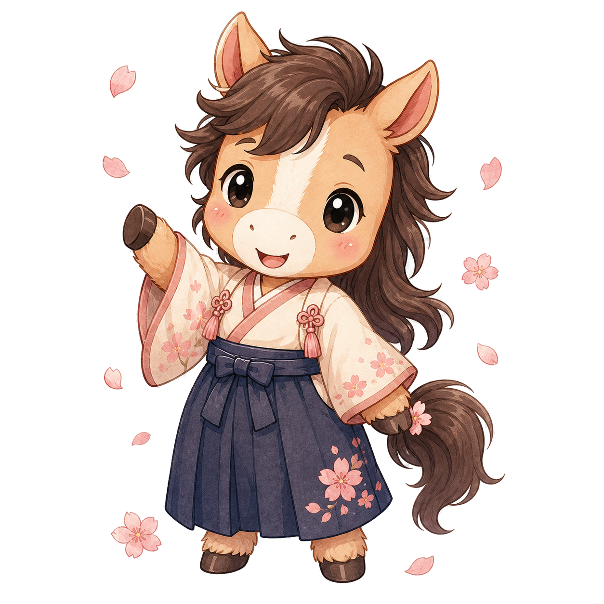
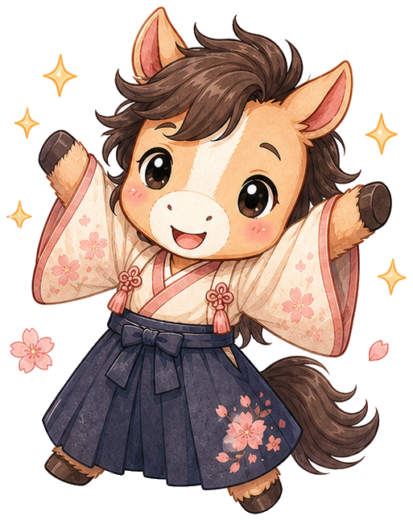

Палитра Sakura + Sumi. Маскот: чиби-Кони (стиль Ghibli). 6 ключевых экранов.


Используй を в живой речи
1. Онбординг2. Дашборд → "Начать"3. Повтор (5 мин)4. Урок (5 мин)5. Разговор (5 мин)6. Anime Moment разблокируется